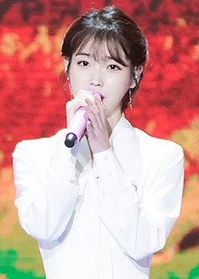

생애
어린 시절
아이유는 1993년 5월 16일 대한민국 서울특별시 광진구에서 태어났으며, [주 1] 경기도 하남시와 의정부시를 거쳐 서울특별시 광진구에서 자랐다. 초등학교는 하남시의 하남천현초등학교에서 3학년까지 다니다가 서울 광진구의 서울양남초등학교로 전학한 뒤에 해당 초등학교를 졸업하였다. 이후 의정부의 신곡중학교에 입학해 서울 광진중학교로 전학을 갔고, 언주중학교로 또 한 번 전학을 가서 2009년에 졸업하였다. 초등학생 시절, 연예인이 장래 희망 중 하나였다고 한다.[5] 중학생 1학년 때, 교내 체육대회에서 거미의 〈친구라도 될 걸 그랬어〉, 체리필터의 〈낭만 고양이〉 등을 부르고 난 뒤 무대의 매력을 느끼고, 가수가 되기 위해 여러 차례 오디션을 보러 다녔다. 중학교 1~2학년때 JYP 엔터테인먼트를 비롯한 여러 기획사의 가수 오디션에 약 20여 차례 지원을 했지만 연이어 불합격하였다. [6][7][8] 초등학교 후부터 아이유는 매우 어려운 가정사를 겪었다고 한다. 빚보증을 잘못 서서 한순간에 집안 사정이 나빠졌다. 2011년 3월 14일 MBC 《놀러와》에 출연해서 말하였는데, 아이유는 "부모님과 연락도 닿지 않는 상황에서 동생, 할머니와 함께 어렵사리 구한 단칸방에는 바퀴벌레가 많아 생활하기 힘들었다"라고 회고했고, 이어 친척 집에서도 신세를 지게 되었는데 "어린애가 공부는 안 하고 노래 바람이 났다"라고 하는 이야기를 잠결에 듣게 되었고 그때 속으로 성공하겠다는 다짐을 했다고 고백했다. [9] 하지만 연예 기획사에 사기를 당한 적이 몇 번 있다고 한다. 없는 살림에 마련한 목돈을 전부 날려 허탈해 할 때 할머니께서 손에 쥐여준 용돈을 보며 많이 울었다고 한다. 굿 엔터테인먼트에서는 잠깐 연습생으로 있었는데, 오소녀의 멤버들과 같이 연습생 생활을 했다고 한다.[5] 그 후, 바로 전 소속사인 로엔엔터테인먼트 및 뮤직큐브의 프로듀서인 최갑원의 도움으로 2007년 10월 오디션에 합격하였다.[10] 음색이 좋고 감각이 뛰어나다는 평을 받으며 하동균, 거미 등의 전폭적인 지지를 받았으며, 정식 데뷔 전 여러 비공식 무대를 거쳐[11] 연습생 기간이 1년도 되지 않은 2008년 9월 18일 16세의 나이로 정식 데뷔를 하게 되었다. [2][12] 한편, 고등학교는 동덕여자고등학교를 졸업하였으며,[13][14] 대학교 진학에 대해 자신은 학업에 충실하기 어렵다는 생각에 기인해 포기했다.[15]
2008-2009
2009년 7월 5일에 핫트랙스 잠실점에서 개최된 팬사인회에서의 아이유 아이유는 2008년 9월 23일에 발매된 첫 번째 미니 음반 Lost and Found를 통하여 가수로 데뷔하였다. 데뷔 전부터 라디오에서 음악을 알렸던 아이유는 유영석, 유희열, 정재형 등의 음악가들로부터 호평을 받았다. 유영석은 "나이가 어린 소녀인데 노래를 너무 잘하고, 음악성이 뛰어난 것 같아서 이 앨범을 추천한다"라고 칭찬하였으며, 정재형은 "앞으로 많은 발전이 기대되는 가수"라며 기대감을 보였다. [16] 아이유는 음반이 발매되기 전인 2008년 9월 18일에 Mnet 《엠 카운트다운》에서 타이틀곡인 〈미아〉를 불러 첫 데뷔 무대를 가졌다. 타이틀곡 〈미아〉는 이종훈, 민웅식이 공동 작곡한 곡으로 일렉트로닉 사운드에 힙합 리듬이 섞인 하이브리드 팝 발라드이다. [17] 앨범 발매 당시에는 별로 관심을 받지 못하였지만,〈미아〉를 통하여 아이유는 당시 16세의 소녀답지 않은 가창력으로 코러스와 아리아부분까지 1인 3역을 소화해 내며 조금씩 대중들에게 얼굴을 알렸다. [18] 그 결과 2008년 10월에 문화체육관광부에서 추진하는 '이달의 우수 신인음반 선정 및 홍보 지원사업'에서 아이유의 Lost and Found가 선정되었다.[19] 아이유는 2009년 4월 23일에 정규 1집 Growing Up을 발매했다. 이 음반에는 발랄하고 밝은 느낌의 다양한 장르의 곡들이 수록되어 있다. [20] 음반 발매 전, 아이유는 타이틀곡 〈Boo〉로 2009년 4월 17일에 KBS 《뮤직뱅크》에서 처음으로 컴백 무대를 가지게 되었으며, 깜찍한 무대 스타일로 이목을 집중시켰다. [21] 아이유가 이름을 알리기 시작한 것은 이때부터인데, 2009년 5월부터 유행하기 시작한 'MR제거 동영상'에서 아이유는 빼어난 가창력을 뽐내 실시간 검색어에서 1위를 하는 등 대중들에게 이름을 알렸고, 가창력을 인정받았다. [22] 또한 방송 프로그램인 《스타골든벨》, 《유희열의 스케치북》 등에서 당시 열풍이던 〈Gee〉, 〈Sorry, Sorry〉, 〈거짓말〉등의 인기곡들을 어쿠스틱 버전으로 재해석해 부름으로써 가창력을 또다시 인정받으며 화제가 되었다. [23][24] 2009년 12월에는 MBC 《세바퀴》에서 이문세의 〈옛사랑〉, 김현식의 〈내 사랑 내 곁에〉, 나미의 〈슬픈 인연〉 등을 기타를 치며 불러 좋은 반응을 얻었다. 2009년 7월 10일부터는 후속곡인 〈있잖아(Rock ver.)〉로 활동을 시작하였는데 치어리더 컨셉의 안무로 또 다른 모습을 보여주었다. [29] 정규 1집 음반 활동은 2009년 8월 15일에 MBC 《쇼! 음악중심》에서 〈있잖아(Rock Ver.)〉 무대를 끝으로 마무리하고 이 시기부터 케이블 TV 프로그램의 메인 MC, 라디오 고정게스트 등의 음반 외 활동을 활발히 하게 되었다. 아이유는 이번 음반 활동을 통하여 뛰어난 가창력으로 확실한 인지도를 넓혔고, 이름을 알리기에 충분한 활동을 하게 되었다. 이후 아이유는 2009년 11월 12일에 두 번째 미니 음반 IU...IM을 발매하고 자켓사진을 공개하였는데, 이전 음반 컨셉보다 더욱 더 상큼해지고, 발랄해진 컨셉으로 2009년 11월 13일 KBS 《뮤직뱅크》에서 컴백하였다.[30] 타이틀곡은 〈마쉬멜로우〉로 이전의 곡들보다 더욱 업그레이드 된 전형적인 팝스타일의 곡이다. 〈마쉬멜로우〉는 아이유에게 각종 음원사이트에서 데뷔 후 처음으로 10위권 내에 드는 성과를 거두게 해주었고, KBS 《뮤직뱅크》에서는 2009년 11월 마지막 주 K차트에서 10위, SBS 《인기가요》에서는 테이크 세븐(Take 7)에 2009년 12월 6일부터 2010년 1월 10일까지 총 5회 선정되며 인기를 끌었다. 두 번째 미니 음반 활동은 2010년 1월 22일에 KBS 《뮤직뱅크》에서의 무대를 마지막으로 후속곡 활동 없이 마무리하였다.
2010
2010년 멜론 뮤직 어워드에서 아이유. 2010년에 들어서 아이유는 음반 외 활동을 주로 하게 되는데 특히 라디오를 중심으로 많은 활동을 하게 되었다. 2010년 4월에는 대한민국의 방송 3사의 라디오 프로그램 고정 출연만 5개를 했고, [31] 2010년 4월 26일부터는 소녀시대 태연이 진행하던 MBC FM4U 《친한친구》의 DJ를 임시로 2주 동안 맡아 비스트의 윤두준과 함께 진행하는 모습도 보였다.[32] 한편 2010년 1월 14일에는 아이유 공식 팬카페 '유애나'의 주최로 데뷔 1주년 이벤트를 열었는데, 150여 명의 팬들과 영화관 데이트를 즐기기도 했다.[33] 또한 2010년 5월 5일에는 제28회 《MBC 창작동요제》의 사회를 신동과 함께 맡았으며, [34] 2010년 5월 20일과 5월 21일, 양일간은 V.O.S의 최현준, 스윗 소로우의 성진환과 함께 '2010 러블리 피크닉'이라는 콘서트를 아이유 데뷔 후 최초로 열었다. [35] 이 시기에 아이유는 주로 디지털 싱글을 내게 되는데, 나윤권과 함께 한 〈첫사랑이죠〉, 텔레시네마 프로젝트 '나인틴' OST인 〈다섯째 손가락〉, 2AM의 임슬옹과 함께 한 〈잔소리〉, MBC 로드 넘버원 OST인 〈여자라서〉, 유승호와 함께 한 〈사랑을 믿어요〉, 성시경과 함께 한 〈그대네요〉 등을 차례로 발매하게 되었다. 이 중에 특히 〈잔소리〉는 아이유에게 큰 성과를 내게 해 주었는데, 아이유 데뷔 후 최초로 음악 프로그램 KBS 《뮤직뱅크》와 SBS 《인기가요》에서 1위를 수상하게 해 주었고, 온라인 음원사이트 중 멜론은 2010년 6월 5일부터 6월 25일까지 18일 연속으로 1위를 이어갔으며, 다른 음원사이트에서도 2010년 6월 한 달간의 월간차트 1위를 거의 휩쓰는 결과를 얻었다. [주 2] 〈잔소리〉와 관련된 택시에서의 라이브 동영상도 더불어 화제가 되기도 했다. [36][37] 〈잔소리〉는 가온차트 2010년 연간 총 집계 순위에서 미쓰에이의 "Bad Girl Good Girl"에 이어 2위를 기록했다. [38] 한편 성시경과 함께 부른 디지털 싱글 〈그대네요〉도 온라인 음원차트에서 상위권에 랭크되었다. 아이유는 2010년 3월에 Mnet에서 방송된 《A-Live》 - '김형석의 다락방 편'에 출연하였는데, 김형석은 아이유에 대해 "나윤권과 함께 발라드를 부르는 모습을 보니 목소리나 호흡이 너무 좋더라"라며 "아이유는 음색이 너무 예쁘다, 개인적으로 허스키하면서도 중음의 포인트가 너무 좋았다"라며 칭찬한 뒤 "여러 신인들을 눈 여겨 보는데 재능 있는 이들 중 하나"라고 평가하였다. [39][40] 이후 김형석은 "유일하게 내가 먼저 곡을 주겠다고 한 유일한 가수"라고 칭찬하기도 했다.[27] 이어 이승환도 "앞으로 지켜봐야 할 가수"라고 언급했다. [41] 음악평론 웹진 '이즘(IZM)'의 성원호는 "천편일률적인 아이돌 세계에서도 예외는 있기 마련. 앙증맞은 목소리로 댄스곡을 부르다가도 기타를 튕기며 노래를 읊조릴 줄 아는 아이유가 바로 그런 존재"라고 높이 평가하면서도 "보컬은 좀 더 솔직해 질 필요가 있다"라고 덧붙였다. [42] 《위대한 탄생》에서 독설을 선보였던 박완규도 아이유의 방송을 빠짐없이 봤다며 팬임을 드러내기도 했다. [43] 소프라노로 활약하고 있는 조수미는 "아이유 노래 듣고 놀랐다. 아주 독특하고 뛰어난 가창력이다"라며 노래를 들어본 후 한국에 와서 인터넷으로 찾아봤다며 칭찬했다.[44][45] 2010년 7월초에는 음반 준비와 목 건강상의 이유로 모든 라디오 프로그램의 출연을 중단했지만, 그 해 7월 18일부터 시작된 SBS 《일요일이 좋다 - 영웅호걸》에 첫 예능 고정 출연을 하였다.[46] 아이유는 2010년 12월 9일에 세 번째 미니 음반 REAL을 발매하였는데,[47] 타이틀곡인 〈좋은 날〉이 발매되자마자 큰 호응을 얻으며 발매 첫 날부터 각종 음원사이트에서 실시간차트 1위를 하면서 인기를 끌었다. [48] 2010년 12월 10일부터 타이틀곡 〈좋은 날〉로 음악방송 활동을 시작한 아이유는 KBS 《뮤직뱅크》 컴백무대에서 〈좋은 날〉의 마지막 부분인 '~ my dream' 부분에서 원곡을 능가하는 세 단계에 걸친 고음 처리(일명 "3단 고음")를 라이브로 소화해 화제가 되었으며,[49] 누리꾼들은 합성 패러디 동영상을 주제별로 수십여 가지를 만들어내며 좋은 반응을 보였다. 그러나 아이유는 12월 28일 한 인터뷰에서 "3단 고음을 그만 하겠다"라고 하였는데, 이에 대해 아이유는 "가창력이란 노래로 대중에게 전해지는 힘이다. 그래서 기술보다 감성, 감정이 더 중요하다" 라며 3단 고음으로만 주목 받는 것에 대해서 부정적인 입장을 보였다. [50] 또한 〈좋은 날〉이 워낙 고음을 요하는 노래이기 때문에 성대결절에 대한 우려도 한 가지 이유로 제기된다.[51] 이러한 아이유의 대표 기술인 3단 고음에 대한 논문이 작성되기도 하여 화제를 일으키기도 했다. 숭실대학교 배명진 교수가 작성한 이 논문에는 "아이유가 최고음에서 주파수의 변동 폭이 안정적이며 폐활량이 풍부해 최고음을 오래 지속시킬 수 있다"라고 분석했다. 결국 〈좋은 날〉은 음반 발매 일주일여만에 공중파 음악 프로그램인 SBS 《인기가요》에서 단독으로는 처음으로 1위를 차지했고, [52] 이어서 3주 연속으로 1위를 차지해 트리플 크라운을 달성했다. 또한 Mnet 《엠 카운트다운》에서도 1위를 차지하며 지상파, 케이블 방송의 음악 순위 프로그램에서 모두 1위를 하는 성과를 얻었다. [53] 온라인 음원사이트에서도 많은 인기를 얻었는데, 멜론에서는 2010년 12월 10일에서 2011년 1월 7일까지 일간차트에서 연속 29일 동안 1위를 하는 기염을 토하였고, 2010년 12월의 월간차트도 멜론, 도시락, 엠넷, 소리바다 등 월간차트를 제공하는 모든 음원사이트에서 1위를 차지했다.[주 3]
2011-2013
2011년 11월 3일 열린 스타일 아이콘 어워즈에 참석한 아이유. 아이유는 2011년 1월 3일부터 2011년 2월 28일까지 방영된 KBS 월화드라마 《드림하이》에서 '김필숙' 역으로 출연하였는데, 그 동안의 모습과는 다른 뚱뚱한 모습으로 나오며 연기자로써의 새로운 모습을 보여 주었고, 상대적으로 비중이 낮은 캐릭터지만 첫 연기임에도 불구하고 의외의 가능성을 발휘했다고 평가되기도 했다. [54][55] 또, 《드림하이》 OST 중에 아이유가 부른 〈Someday〉는 꾸준히 차트 상위권에 오르며 인기를 끌었다.[56] 한편 아이유는 2011년 1월 16일 SBS 《인기가요》의 무대를 마지막으로 한 달여 간의 〈좋은 날〉 활동을 마쳤다. 소속사측은 아이유가 드라마 촬영과 가수활동, 예능활동을 병행하는 등 많은 스케줄을 소화하면서 수면부족과 몸살 등으로 인해 건강이 나빠져 생각보다 빨리 활동을 접게 되었다고 1월 14일 인터뷰에서 밝혔다. [57][58] 〈좋은 날〉 활동을 마친지 한 달여만인 2월 17일에는 싱글 음반 Real+가 발매되어 2월 18일 KBS 《뮤직뱅크》에서 타이틀곡인 〈나만 몰랐던 이야기〉로 컴백했다. [59] 〈나만 몰랐던 이야기〉는 음원사이트에서도 큰 인기를 얻으며 발매한지 하루만인 2월 18일에 모든 음원사이트에서 1위를 차지하였다. [60] 싱글 음반 Real+활동은 3월 13일 SBS 《인기가요》에서 〈잔혹동화〉의 무대를 마지막으로 마무리했다. 3월 10일 아이유는 그 동안 존경의 뜻을 밝혀왔던 코린 베일리 래의 내한 콘서트에서 게스트로 참여해 노래를 부르기도 하였는데, [61] 코린 베일리 래는 아이유에 대해 "무척 아름다운 보이스를 가졌더군요. 한국에서 보내준 영상을 통해 그녀가 직접 기타를 들고 제 노래를 부르는 것과, 다른 곡들을 그녀만의 스타일로 어쿠스틱 어레인지를 하여 부르는 것을 보았는데 매우 인상 깊었습니다"라고 칭찬했다. [62] 아이유는 그 동안 여러 방송에서 코린 베일리 래의 대표곡인
2012년 2월 12일, 아이유. 아이유는 싱글앨범 스무 살의 봄을 2012년 5월 11일에 발매하였다. 그 이전에 자신의 세 번째 자작곡인 〈복숭아〉가 5월 4일에 선공개 되어 모든 음원차트에서 1위를 하며 인기를 끌었고 11일에 공개된 타이틀곡 〈하루 끝〉도 발매되자마자 1위를 차지하였다. [4][81] 한편 11일 공개된 〈하루 끝〉의 뮤직비디오는 러닝타임이 26분 55초로 단편음악영화 형식을 취하고 있다.[82] 아이유는 'Real Fantasy'콘서트 준비로 이번 싱글앨범 발매 홍보를 위한 방송활동은 일절하지 않았다.[83] 아이유는 'Real Fantasy'라는 타이틀로 6월 2일과 3일 서울을 시작으로 울산, 전주, 수원, 부산, 대구 총 6개 도시를 돌며 첫 단독 콘서트를 하였다. 9월 22일과 23일에는 'Real Fantasy'의 앵콜 콘서트가 서울 용산 전쟁기념관에서 이루어졌다. 7월 26일에는 로엔엔터테인먼트에서 여름 프로젝트 앨범 LOEN TREE Summer Story를 발매하였는데, 아이유는 신인 피에스타와 함께 참여한 타이틀곡 〈달빛바다〉를 불렀다. 〈달빛바다〉는 공개된 직후 9시간만에 멜론, 엠넷, 벅스, 올레뮤직 등의 음악 차트에서 1위를 차지했다. 한편 아이유는 영화 《새미의 어드벤쳐 2》의 '엘라' 역의 더빙을 맡으며 데뷔 후 처음으로 목소리 더빙에 참여하였다.[84] 아이유는 8월 19일부터 방송된 MBC의 《최강연승 퀴즈쇼 Q》에서 손범수, 박명수와 함께 첫 퀴즈쇼 MC로서 진행을 맡았다. 첫 회가 끝난 뒤 아이유의 진행 능력은 시청자들에게 합격점을 받으며 호응을 얻었다. [85] 8월 20일에는 삼성전자가 갤럭시SⅢ의 인텔리전트 카메라로 완성한 포토에세이 '20살 아이유의 감성 사진 놀이' 를 출간한다고 밝혔다. 이번 포토에세이는 아이유가 유명 사진작가 김한준씨의 도움을 받아 갤럭시SⅢ의 카메라로 자신의 일상 등을 직접 촬영한 사진 작품으로 이루어져 있다.[86] 한편 아이유는 지난 10월 말 경 자신이 졸업한 동덕여자고등학교에 도서 구입 명목의 발전기금 1000만원을 기부했다. 관계자에 따르면 아이유는 기부하면서 학교 측에 기부 사실을 되도록 밝히지 말아달라고 부탁했으나, 동덕여고 교지 '선배들 소식란'에 아이유의 기부소식이 실리면서 외부에 알려지게 됐다.[87] 12월 21일(현지시간) 미국 영화 비평지 'TC캔들러'가 발표한 '세계에서 가장 아름다운 얼굴'(Most Beautiful Faces of 2012) 차트에서 19위를 차지해 한국 스타로서 '세계에서 가장 아름다운 얼굴 100인'에 이름을 올렸으며[88] 한국갤럽조사연구소가 조사한 '2012년 올해를 빛낸 10대 가수'에서 지난해 5위였던 아이유는 6.9%의 선호도를 얻으며 4위로 올라섰다.[89] 또한 12월 28일 한국방송광고진흥공사(코바코)가 공개한 2012 소비자 행태조사(MCR) 에서 소비자들이 꼽은 광고모델 Top10에 이름을 올렸다.[90] 아이유는 2013년 3월 9일부터 2013년 8월 25일까지 방영된 KBS 2TV 주말연속극 《최고다 이순신》에서 주연인 이순신 역을 맡아 열연을 펼치기도 했다.[91] 3월 20일에는 일본에서 미니 앨범 Can You Hear Me를 발매하였는데, 현지 언론이 이에 큰 관심을 드러냈다. 산케이는 "한국의 인기 여가수 아이유가 자넷 잭슨, 우타다 히카루 등을 프로듀싱한 미국 명 콤비 잼과 루이스와 팀을 이뤘다. 잼과 루이스는 이들이 프로듀싱한 가수들을 미국 빌보드 1위에 숱하게 올려 놓은 거물이다"라고 밝혔다. 이어 "두 사람은 아이유의 3단 고음에 반해 곡을 주기로 했고 자넷과 같은 감을 느꼈다고 말했다. 이들은 아이유에게 편안하고 느긋한 가성이 빛나는 업 템포의 곡을 줬다"라고 설명했다.[92] 10월 8일에는 아이유의 정규 3집 Modern Times가 음원으로 공개되었다. '음악적 성장을 통한 성숙'이라는 테마를 기획으로 진행된 Modern Times는 조영철 프로듀서를 필두로 로엔엔터테인먼트A&R팀은 모던함과 빈티지함을 함께 아우를 수 있는 음악을 목표로 앨범 컨셉을 잡아갔다. 특히 본인이 적극적으로 참여해가며 2곡을 작곡하고 4곡을 작사하였으며, 외형컨셉은 '프렌치 블랙'으로 과감히 도전했다. 라틴, 스윙, 보사노바 등 재즈느낌의 곡들과 펑키느낌의 곡들을 만들었다. 이번 앨범은 지난 앨범들에 있는 '소녀'의 모습과는 달리 생소한 아이유를 보여주며, 아이유가 이번앨범을 더욱 공들여 만들었다는 것을 재즈의 느낌에서 대중적인 감각까지 함께 담은 음악들과 제일 중요한 국민 여동생의 이미지를 벗은 앨범이 나왔다는 것에서 볼 수 있다. 아이유의 정규 3집의 본격적인 활동은 음원공개 1일 전 서울 송파구에 위치한 올림픽공원 K아트홀에서 열린 쇼케이스로 시작되었고, 8일 공개됨과 동시에 버스커버스커를 따돌리고 타이틀곡 <분홍신>이 음원차트 1위를 차지하였고, 수록곡 전부 상위권에 들어갔다. 또한 2013년 11월 23일부터 2주간 아이유의 두 번째 단독 콘서트 'Modern Times' 콘서트도 서울 경희대 평화의 전당과 부산 KBS홀에서 열렸다. 2013년 11월 20일부터 2014년 1월 9일까지는 KBS2 드라마 《예쁜 남자》에서 김보통 역할을 맡았다. 같은 해, 아이유는 12월 20일 Modern Times앨범에 <금요일에 만나요>, <크레파스> 두 곡을 추가한 Modern Times 리패키지 앨범을 발표 하였다. <금요일에 만나요> 는 아이유 작사작곡(편곡 이종민), <크레파스>는 작사에 참여했다. 드라마 촬영으로 인해 활동계획이 없어 방송심의조차 신청하지 않은 앨범의 타이틀곡 <금요일에 만나요>가 음원 사이트 1위를 휩쓸고 방송 3사의 음악 프로그램 1위를 차지하였다.
2014-2016
2014년 11월 13일 멜론 뮤직 어워드 수상식에서 아이유. 2014년 아이유는 리메이크앨범 꽃갈피를 발표하였다. 김창완의 <너의 의미>등 선배가수의 노래를 아이유가 다시 불렀으며 당시 큰 인기를 누렸다. 이후 해당 음반을 주로 한 소극장 콘서트를 진행하여 화제를 모았다. 2014년 6월에는 울랄라 세션과 함께 곡 <애타는 마음>을 발표하였다. 해당 곡은 2년 전의 아이유의 목소리가 담긴 것으로 고 임윤택의 마지막 목소리가 담긴 곡이 되었다. 고인이 마지막까지 보였던 음악에 대한 열정이 상업적인 이슈가 되지 않기를 바라서 뒤늦게 발표된 것이다. 2014년 10월 2일 서태지와 협업한 곡 <소격동>을 발표하기도 하였다. 2015년 아이유는 KBS2 박지은 작가 극본의 드라마 《프로듀사》에 신디 역할로 출연하였다. 예능국 안에서 펼쳐지는 이야기를 담은 작품으로 방영 전부터 큰 화제를 모았으며, 《최고다 이순신》 이후 시청률 부분에서도 아이유 본인에게 가장 성공한 드라마였다. 신디 역할 자체가 톱스타 역할이기에 그간 보지 못한 새침하면서도 도도한 연기를 볼 수 있었으며, 평소 아이유 노래에서는 찾기 힘든 섹시함이 담긴 곡
2017-2018
2017년 6월 27일 영화 《리얼》VIP 시사회에서 아이유 2017년 아이유는 데뷔 9년 만에 팬클럽이 창설되었다. 기존 팬카페였던 '유애나'의 이름은 팬클럽의 이름으로 변경되었으며, 기존 팬카페는 따로 명명하는 바 없이 공식 팬카페로 구분하게 되었다. 응원봉의 이름은 '아이크'로 아이유 본인이 명명하였다. 일반적인 응원봉의 색깔은 흰색이지만 공식 팬클럽 플러스 회원의 경우 은색을 갖게 되며, 2017년 콘서트 'Palette'에서 '이름에게' 이벤트에 당첨된 이들에게는 아이유의 커스텀 마이크와 색깔이 같은 (한정판) 보라색 응원봉을 주었다. 2017년 3월 24일 아이유는 선공개곡 <밤편지>를 공개하였다. <밤편지>는 2월 멜론 차트 개편 이후 1위를 했다. 2017년 4월 7일 아이유는 오혁이 피처링에 참여한 선공개곡 <사랑이 잘>을 발표하였으며, 2017년 4월 21일 <팔레트>와 <이름에게>를 타이틀 곡으로 한 정규 앨범 Palette를 발표하였다. 타이틀곡 <팔레트>는 G-Dragon이 피처링하였으며 특히 음악방송에서 아이유는 G-Dragon의 랩파트에서 스스로 랩을 개사하여 불러 랩 부분에서도 좋은 반응을 얻었다. Palette의 더블 타이틀곡인 〈이름에게〉는 가사 내용 등 노래가 "세월호 침몰사고 추모곡 같다"는 일부 네티즌들의 의견이 나왔으나 아이유 측이 '이름에게'라는 곡이 세월호 추모곡이라고 밝힌 적은 없다. 앨범 Palette는 빌보드가 선정한 '올해의 K-POP 앨범' 부문 TOP 1에 올랐다. 2017년 6월 25일부터 2017년 9월 24일까지 방영한 예능 《효리네 민박》에 고정출연을 하였다. 《효리네 민박》에서 입을 열지 않고 오물오물 씹는 것, 힘 없이 뛰는 등의 모습을 따라하는 '아이유병'이 일부 팬들 사이에 유행하였다. 2017년 9월 22일 오후 6시에 아이유의 두번째 리메이크 앨범 꽃갈피 둘을 발매하였는데, 이는 2014년 발매한 꽃갈피의 연장선으로, 리메이크 앨범이다. 아이유는 2017년 9월 24일 팬미팅에서 앨범 비하인드 스토리를 공개하였는데, 원래 앨범 수록곡 중에 김광석의 <잊어야 한다는 마음으로>가 있었으나, "사망과 관련한 논란으로 인해 자칫 오해를 불러일으킬 수 있어 긴 고민 끝에 삭제했다"고 밝혔다. 이로 인해 음반 판매가 지연되기도 하였다. 2017년 멜론 뮤직 어워드에서 ‘올해의 TOP10’, ‘싱어송 라이터상’을 비롯해 대상에 해당하는 ‘올해의 앨범상’을 수상하며 멜론 뮤직 어워드의 3가지 대상을 모두 수상하는 기록을 세웠다. 이때 수상 소감 중 절친 유인나에 대한 애정을 드러내었다. 2017년을 마무리하며 SBS 《가요대전》에서 또 한번 MC를 맡게되었는데, 이 때 유희열과 함께 김현식의 <내 사랑 내 곁에>를 선보였다. 해당 무대는 아이유의 감성과 유희열의 연주가 더해져 화제를 모았으며 특히, <내 사랑 내 곁에>는 종현이 생전에 아이유와 함께 부르고 싶어했었던 노래였던 사실이 알려져 안타까움을 더했다. 
2018년 1월 10일 골든디스크에서 아이유. 2018년 1월 6일 0시 Youtube를 통해 지난 앨범 꽃갈피 둘에서 미처 수록되지 못했던 김광석의 <잊어야 한다는 마음으로>의 리메이크 뮤직비디오를 헌정 영상으로 공개하였다. 김광석의 22주기를 추모한 것으로, 해당 뮤직비디오는 <밤편지>의 뮤직비디오 감독이었던 이래경 감독이 다시 함께하였으며, 배우 박정민이 함께 출연하였다. 지난 팬미팅에서 앨범에 수록되지 못하는 이유를 설명하며 상영되었던 것으로, 특히 <밤편지> 뮤직비디오의 연장선상이었기에 팬들에게 호평과 아쉬움이 많았던 뮤직비디오였다. 해당 곡은 음원으로는 발표되지 않았다. 2018년 1월 골든디스크 시상식에서 음원 부문 대상을 수상하며 종현에 대한 슬픔과 함께 다른 뮤지션들과 팬들을 위로하는 수상소감을 밝혔다. JTBC 뉴스룸에도 출연하여 손석희 앵커와 뮤지션으로서 여러 가지 이야기를 나누었는데, 이때 '사람'에 대한 이야기에서 10년차 뮤지션으로서 성숙해진 아이유의 생각을 드러냈다. '2018 한국대중음악상'에서 아이유는 '올해의 음반', '올해의 노래', '올해의 음악인' 등을 포함한 총 5개의 부문에 후보로 선정되며 최다부문 후보 선정자로 화제를 모았다. 앨범 Palette에 대해 선정위원 유정훈은 "타의 추종을 불허하는 독보적인 음색과 곡 해석 능력을 바탕으로 아이돌의 상큼함과 싱어송라이터로서의 노련미까지 두루 갖춘 웰메이트 팝 앨범을 완성했다."고 했다. 이는 인디와 메인스트림을 넘나드는 다양한 색깔이 담긴 장르를 ‘팔레트’로 삼아 아티스트 아이유가 그려낸 그만큼 영특하다."와 같이 평했으며, 수록곡 <밤편지>에 대해 선정위원 김성환은 "아이유는 2017년에 신곡을 담은 [Palette]와 커버앨범 [꽃갈피 둘]로 어느 때보다 대중과 더 활발하게 소통했다. 블록버스터 같은 지향을 보여줬던 이전 앨범들보다 자신에게 잘 어울리는 옷이 무엇인가를 파악했고, 푸근하고 인간적인 면을 강조한 곡들이 매력을 더했다. 특히 이 곡에서 그녀는 모든 세대를 아우를 수 있는 자신만의 감성의 장점을 잘 파악했고, 이를 차분한 어쿠스틱 사운드에 기반한 서정성으로 표현, 세대와 취향을 넘어선 원숙한 팝 사운드의 정석을 구현해냈다."와 같이 평했다. 2018년 2월 제7회 가온차트 뮤직 어워즈에서 5관왕(피처링 곡 포함시 6관왕)의 대기록을 세우며 화제를 모았다. 특히, 주목할 점으로 올해의 롱런음원상과 올해의 작사가상, 올해의 음반제작상 등을 수상한 점이다. 여성 솔로 아티스트로서 한 해에 해당 상을 모두 수상한 기록은 전무후무하며 그저 노래만 잘 부르는 것이 아닌, 자신의 이야기를 노랫말로 옮겨 하나의 작품으로 만드는 능력까지 겸비한 아티스트로 성장한 점이 앞으로의 그녀를 기대하게 되는 부분이라 할 수 있다. 또한, 올해의 음반제작상을 수상할 때 데뷔 이후 줄곧 함께 해온 아이유팀이 한 무대에 올라 함께 수상 소감을 말하기도 하였다. 2018년 뉴욕 타임즈에서 선정한 현대 음악의 행보를 알 수 있는 노래 25곡 중 곡
2019-2020
미스틱스토리의 대표 프로듀서 윤종신이 기획한 프로젝트로, 이경미, 임필성, 전고운, 김종관 4명의 감독이 이지은(아이유)을 각기 다른 시선으로 풀어낸 총 4편의 넷플릭스 오리지널 시리즈인 《페르소나 (2019년 영화)》에 출연하였다. 원래 예정 공개 시간은 4월 5일이었으나, 2019년 강원도 산불의 영향으로 11일날 공개 되었다. 급작스러운 연기 탓에 대중들의 원성이 많았지만 공개 후 전고운 감독의 《키스가 죄》의 결말 부분이 산불로 끝나는 것의 영향을 받았을 것이라는 추측이 나오면서 사그라들었다. 아이유는 그동안 여러 가지 작품을 통해 나날이 발전하는 연기력으로 시청자들의 호평을 이끌어내고 있었다. 이에 대해 "좋은 평가에 기분이 좋다. 어렸을 때부터 연기를 꿈 꿔왔고, 가수 이전에 연기자의 꿈이 있었다. 가수로 데뷔하고 여러 작품을 하면서 항상 진심으로 참여했다. 작품을 하면서 미숙했던 부분을 배워갔다. 그래서 보시는 분들의 눈에 제 연기가 달라지고 있다고 생각하시는 것 같다"고 답했다. 아이유와 함께 이번에 작업을 한 감독들도 아이유를 향한 만족감을 보였다. 임필성 감독은 "제가 이번 프로젝트에 참여한 이유는 지은 씨가 캐스팅 된 것이 컸다. 설마 할 거라고 생각 못 했다. 창작의 완전한 자유를 줬고, 굉장히 의미 있는 작업이었다. 가장 좋았던 부분은 지은 씨가 감성적이고 이성적인 밸런스가 좋다. 연기를 할 때 아티스트로서 본인을 내려놓는 순간이 있다. 그럴 때 멋있었다. 보통 사람이 아니라는 생각이었다"라며 칭찬을 아끼지 않았다.[93] 5월 1일, 서울특별시 강남구 삼성동 코엑스에서 열린 '제55회 백상예술대상' 시상식에서 V라이브 인기상을 수상하였다. 또한, 이 날은 드라마 《나의 아저씨》에서 맡은 이지안이라는 역할로 염정아(SKY캐슬), 김서형(SKY캐슬), 김태리(미스터선샤인), 김혜자(눈이 부시게) 배우들과 함께 최우수 여자 연기상 후보에 오르며 배우로서의 입지를 굳혔다. 7월 13일부터 9월 1일까지 tvN의 주말 드라마 《호텔 델루나》에 장만월이라는 역할로 여진구와 호흡을 맞추었다. 같은 드라마에 출연한 배우 서이숙은 "이지은은 서른이 채 안 됐는데 내적 이성과 감성이 단단한 친구인 것 같다. 도화지 같은 매력이 있더라. 화장을 안 했을 때, 조명을 받을 때 얼굴이 다양하더라. 평소에 독서량이 많아서 가사도 잘 쓰는 것 같다. 화술도 좋은데 성실하기까지 하다. 자기가 뭘 해야 하는지를 아는 친구라 걱정은 안 한다"라고 애정을 드러냈다.[94] 2019년 11월 1일 아이유는 선공개곡 〈Love poem〉을 공개하고, 11월 18일 〈Blueming〉과 《Love poem》을 타이틀 곡으로 하는 미니 음반 《Love poem》을 발매했다. 〈Blueming〉과 〈Love poem〉은 모두 발매 직후 멜론 실시간 차트 1위를 달성했고 멜론, 지니 등 주요 음원 사이트의 실시간, 일간 차트에서 1위를 달성했다. 2020년 1월 6일, 오랫동안 함께해 온 매니저가 설립한 신생 기획사 이담 엔터테인먼트로 이적했다.[95] 2020년 4월 27일, 아이유는 동갑내기인 방탄소년단 구성원 슈가와 컬래버레이션을 한다고 밝혔고, 뮤직비디오는 오는 5월 6일에 공개된다고 밝혔다. [96] 4월 29일 〈에잇〉의 티저를 공개하고[97], 5월 6일 디지털 싱글로 공개하였다. '에잇'은 아날로그 감성과 트렌디한 사운드의 조화가 돋보이는 밴드 기반의 팝락으로, 스물셋과 팔레트에 이은 나이 시리즈 곡이다. 앞서 선보인 곡들이 화자가 시청자에게 직접적으로 말을 거는 수필 형식의 이야기였다면, '에잇'은 너라는 가상의 인물과 여러 비유를 사용해 아이유의 스물여덟을 고백한 짧은 소설과 같은 곡이다. 2020년 6월, I-LAND의 시그널 곡인 In to the I-land를 직접 불러 발매하였다. 스윗소로우의 '작은 방'을 피쳐링했다. 현재 영화 드림에서 주연을 맡아 이소민 역으로 촬영하고 있다.home